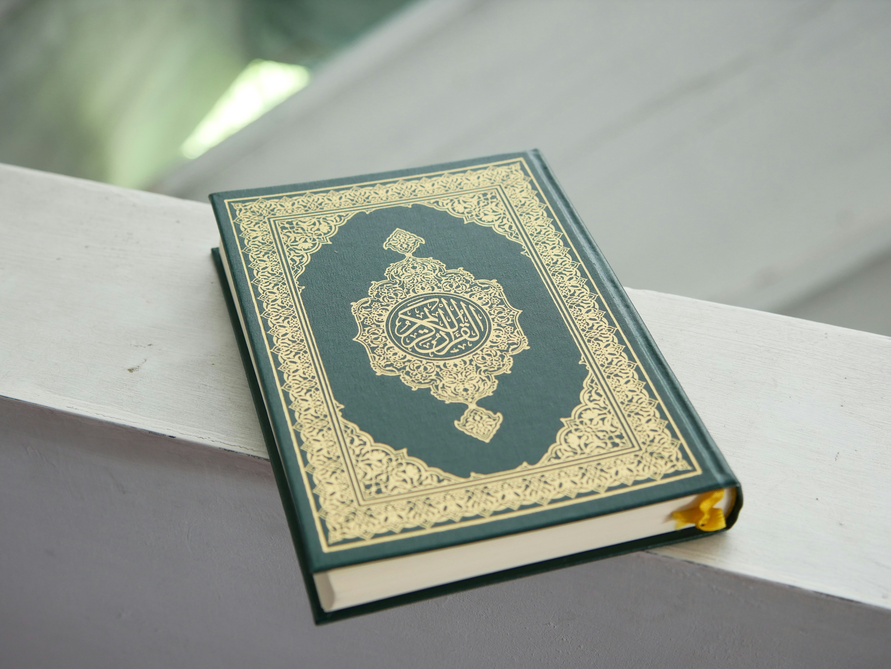

Know About Islam
Welcome to the world of Islam Islam is a global religion that calls for peace, justice, and piety. It is based on the doctrine of monotheism, that is, belief in one God, and the message of the Prophet Muhammad, may God bless him and grant him peace, as the last of the prophets. Islam encourages tolerance, goodness to others, and respect for human rights, and aims to build a balanced society based on moral values.
